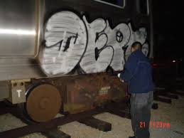

Tags and Throw-ups are the fundamentals to aesthetically pleasing graffiti. It is "taught" that without a solid and well crafted tag and throw-up, a graffiti writer will not have a good base to build upon. This means, when taking the 2 dimensional name into 3 dimensional form, it will continue to lack a cohesive style. Throw-ups transition the writter into the 3rd dimension by allowing the introduction to shadows and perspective 3D effects. One last important aspect of throw-ups is the introduction of a second and even third color. Color blocking and pairing is crucial.
